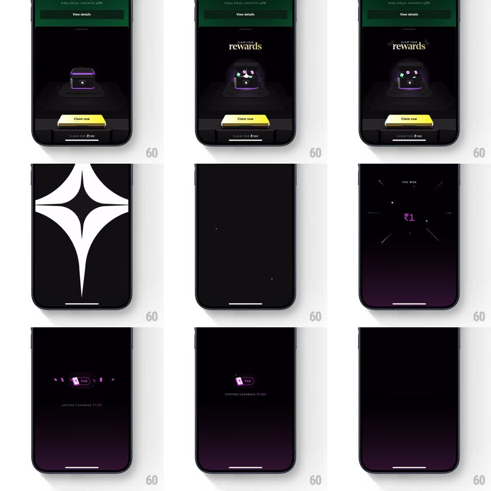

Media
Frame-by-frame

Rebuild this animation 1:1: CRED's reward claim sequence - a glowing chest bursts with gems, a full-screen star flash wipes the screen, a "YOU WON" amount ticks up with radiating lines, and the glowing cashback card settles.

Rebuild this animation 1:1: CRED's reward claim sequence - a glowing chest bursts with gems, a full-screen star flash wipes the screen, a "YOU WON" amount ticks up with radiating lines, and the glowing cashback card settles.
## Integration
Integration: stack-agnostic spec - springs given as stiffness/damping, timed motions as duration + curve; map every value to your framework and animation library of choice.
## Scene
CRED's dark rewards screen: "CLAIM YOUR rewards" serif title above a purple-glowing chest, a yellow "Claim now" button pinned at the bottom. Tapping it fires the sequence: gems pop out of the chest, a white four-point star flash fills the screen, then a deep purple-black stage reveals "YOU WON" with a rupee amount ticking up amid radiating speed lines, settling into a glowing cashback pill with "LIFETIME CASHBACK" below.
## Motion spec
Pattern: claim burst with flash cut and count-up reveal, ~4s total.
- On tap, the chest lid springs open (spring stiffness 320 damping 16) and 5 to 8 gems arc out (500ms, ease-out with gravity), sparkling.
- A white four-point star shape expands from center to fill the screen (350ms, ease-in) - a hard flash cut.
- Out of the flash, the purple stage fades in: "YOU WON" small at top, and the amount ("₹1" then ticking to "₹46") counts up (900ms, ease-out) with thin speed lines radiating outward on entry.
- The amount settles into a glowing pill card (soft purple bloom, 300ms) and "LIFETIME CASHBACK ₹1,369" fades in below (300ms).
## Calibration
- The flash is full-bleed and fast - a wipe, not a fade; it resets the scene.
- The rupee count-up uses Indian formatting and never blurs - the glow is around the card, not on the digits.
## Reduced motion
Chest opens, then crossfade to the final card.
## Don't miss
- The star flash is CRED's brand mark shape, not a generic circle.
- The stage gradient is purple at the bottom fading to black up top.